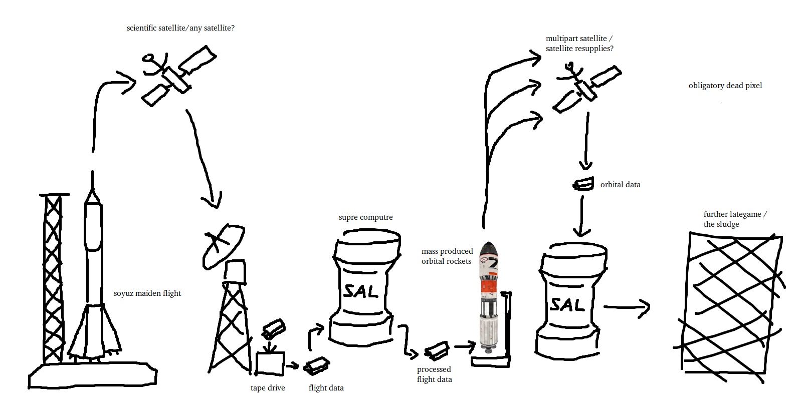

shitarse
Robert Catté's TODO List
Gun rework (no shit)- Remaining guns
- Dungeons for finding legendary parts
- Kill off quadro, replace with a more modern model
- Replace M2 model
Redstone-over-Wire?
Deathclussy
Greater steam turbine
- Low-pressure turbines
- High-pressure turbines
- Flywheels
- Electric engine for pre-spinning
- Alternators of varying tiers
- APU? (Comp V9)
Particle accelerator cannon
More humanoid mobs we can just staple armors and guns to
Custom missile rework (killing the current system and merging it with generic missiles)
Lategam (sludge processing)
DFC rework (ultra low priority)
Schmalz
the image that extends out of your screen

SUPERPROJECTS
...stuff with no actual priority that I like to sink time into, usually secrets- STARCONTROL
- FUCKED UP EVIL GUN
- LPW-2
- GREATER GREG
- WOLF-C
- MECH CYBERNETICS
- ENCORE SYSTEM